2 Service Mesh 和 API Gateway 关系深度
1 原本清晰的界限：定位和职责
首先，Service Mesh 和 API Gateway 在功能定位和承担的职责上有非常清晰的界限：
- Service Mesh：微服务的网络通信基础设施，负责（系统内部的）服务间的通讯；
- API Gateway： 负责将服务以 API 的形式暴露（给系统外部），以实现业务功能；
如上图所示：
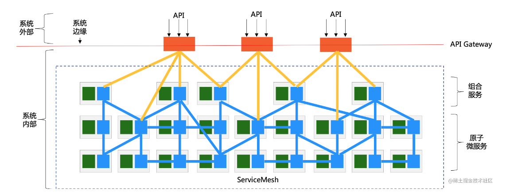
从功能和职责上说：
- 位于最底层的是拆分好的原子微服务，以服务的形式提供各种能力；
- 在原子微服务上是（可选的）组合服务，某些场景下需要将若干微服务的能力组合起来形成新的服务；
- 原子微服务和组合服务部署于系统内部，在采用 Service Mesh 的情况下，由 Service Mesh 提供服务间通讯的能力；
- API Gateway 用于将系统内部的这些服务暴露给系统外部，以 API 的形式接受外部请求；
从部署上说：
- Service Mesh 部署在系统内部：因为原子微服务和组合服务通常不会直接暴露给外部系统；
- API Gateway 部署在系统的边缘：一方面暴露在系统之外，对外提供 API 供外部系统访问；一方面部署在系统内部，以访问内部的各种服务
在这里引入两个使用非常广泛的术语：
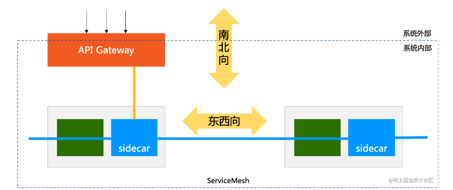
- 东西向通讯：指服务间的相互访问，其通讯流量在服务间流转，流量都位于系统内部；
- 南北向通讯：指服务对外部提供访问，通常是通过 API Gateway 提供的 API 对外部保罗，其通讯流量是从系统外部进入系统内部；
总结：Service Mesh 和 API Gateway 在功能和职责上分工明确，界限清晰。但如果事情就这么结束，也就不会出现 Service Mesh 和 API Gateway 关系的讨论了，自然也不会有本文。
网关访问内部服务，算东西向还是南北向？
如下图所示，图中黄色的线条表示的是 API Gateway 访问内部服务：
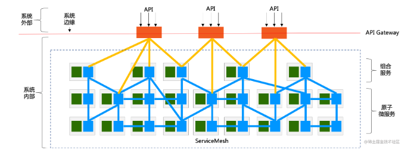
从流量走向看：这是外部流量进入系统后，开始访问对外暴露的服务，应该属于“南北向”通讯，典型如上图的画法。但从另外一个角度，如果我们将 API Gateway 逻辑上拆分为两个部分，先忽略对外暴露的部分，单独只看 API Gateway 访问内部服务的部分，这时可以视 API Gateway 为一个普通的客户端服务，它和内部服务的通讯更像是“东西向”通讯：
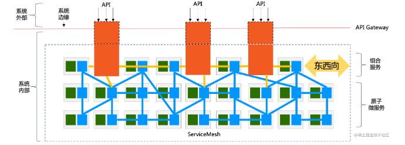
所以，API Gateway 作为一个客户端访问内部服务时，到底算南北向还是东西向，就成为一个哲学问题：完全取决于我们如何看待 API Gateway ，是作为一个整体，还是逻辑上分拆为对内对外两个部分。
在 API Gateway 的各种产品中，关于如何实现 “API Gateway 作为一个客户端访问内部服务” ，就通常分成两个流派：
- 泾渭分明：视 API Gateway 和内部服务为两个独立事物，API Gateway 访问内部服务的通讯机制自行实现，独立于服务间通讯的机制；
- 兼容并济：视 API Gateway 为一个普通的内部服务的客户端，重用其内部服务间通讯的机制；
而最终决策通常也和产品的定位有关：如果希望维持 API Gateway 的独立产品定位，希望可以在不同的服务间通讯方案下都可以使用，则通常选择前者，典型如 Kong；
如果和服务间通讯方案有非常深的渊源，则通常选择后者，典型如 Spring Cloud 生态下的 Zuul 和 SpringCloud Gateway。
当 “API Gateway 作为一个客户端访问内部服务” 时，它的确和一个普通内部服务作为客户端去访问其他服务没有本质差异：服务发现、负载均衡、流量路由、熔断、限流、服务降级、故障注入、日志、监控、链路追踪、访问控制、加密、身份认证...... 当我们把网关访问内部服务的功能一一列出来时，发现几乎所有的这些功能都是和服务间调用重复。
这也就造成了一个普遍现象：如果已有一个成熟的服务间通讯框架，再去考虑实现 API Gateway，重用这些重复的能力就成为自然而然的选择。典型如前面提到的 Spring Cloud 生态下的 Zuul 以及后面开发的 Spring Cloud Gateway，就是以重用类库的方式实现了这些能力的重用。
Sidecar：真正的重合点
在进入 Service Mesh 时代之后，Service Mesh 和 API Gateway 的关系开始是这样：
- 功能和职责清晰划分；
- 客户端访问服务的功能高度重叠
此时两者的关系很清晰，而且由于当时 Service Mesh 和 API Gateway 是不同的产品，两者的重合点只是在功能上。
而随着时间的推移，当 Service Mesh 产品和 API Gateway 产品开始出现相互渗透时，两者的关系就开始变得暧昧。
如何融合东西向和南北向的通讯方案？
其中的一个做法就是基于 Service Mesh 的 Sidecar 来实现 API Gateway，从而在南北向通讯中引入 Service Mesh 这种东西向通讯的方案
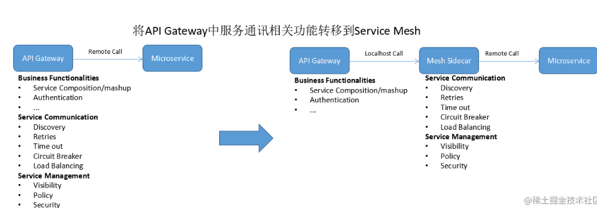
这个时候 Service Mesh 和 API Gateway 的关系就变得有意思了，因为 Service Mesh 中 Sidecar 的引入，所以前面的“哲学问题”又有了一个新的解法：API Gateway 这次真的可以分拆为两个独立部署的物理实体，而不是逻辑上的两个部分：
- API Gateway 本体：实现 API Gateway 除了访问内部服务之外的功能；
- Sidecar：按照 Service Mesh 的标准做法， 我们视 API Gateway 为一个部署于 Service Mesh 中的普通服务，为这个服务 1:1 的部署 Sidecar；
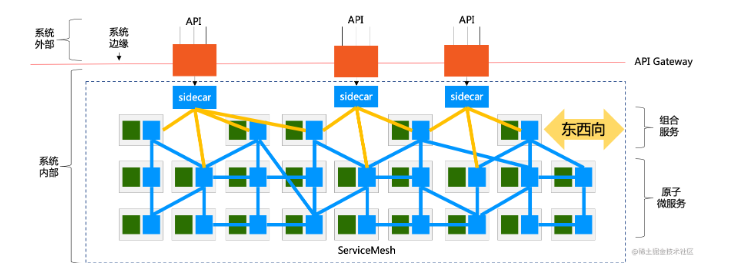
在这个方案中，原来用于 Service Mesh 的 Sidecar，被用在了 API Gateway 中，替代了 API Gateway 中原有的客户端访问的各种功能。
这个方案让 API Gateway 的实现简化了很多，也实现了东西向和南北向通讯能力的重用和融合，而 API Gateway 可以更专注于 “API Management” 的核心功能。
而采用这个方案的公司，通常都是先有 Service Mesh 产品，再基于 Service Mesh 产品规划（或者重新规划） API Gateway 方案，典型如蚂蚁金服的 SOFA Gateway 产品是基于 MOSN，而社区开源产品 Ambassador 和 Gloo 都是基于 Envoy。
这样 API Gateway 本体和 Sidecar 再次合二为一
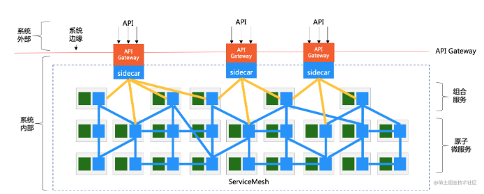
BFF：把融合进行到底
BFF(Backend For Frontend) 的引入会让 Service Mesh 和 API Gateway 走到一个更加亲密的地步。
先来看看常规的 BFF 的玩法：
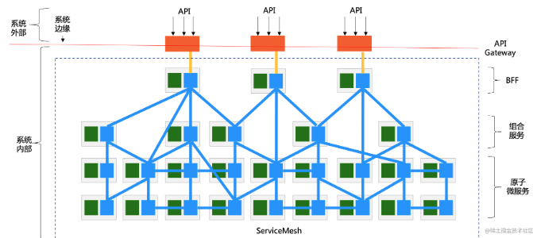
在这里，多增加了一个 BFF 层，介于 API Gateway 和内部服务（包括组合服务和原子微服务）之间。注意 BFF 的工作模式和组合服务很类似，都是组合多个服务。但差别在于：
- 组合服务还属于服务的范畴，只是实现机制上组合了多个服务，对外暴露的依然是一个完整和规范的服务；
- BFF 不同，BFF 如名字所示，Backend For Frontend，完全是为了前端而存在，核心目标之一是简化前端的访问；
- BFF 完全收口了从外部进入的流量，而组合服务没有，API Gateway 是可以直接访问原子微服务的；
“BFF 完全收口外部流量”，这一点在 API Gateway 和 Sidecar 融合之后，会变得很有想象空间，我们先看按照前面的融合方式，在有 BFF 的情况下，API Gateway 和 Sidecar 融合后的情景：
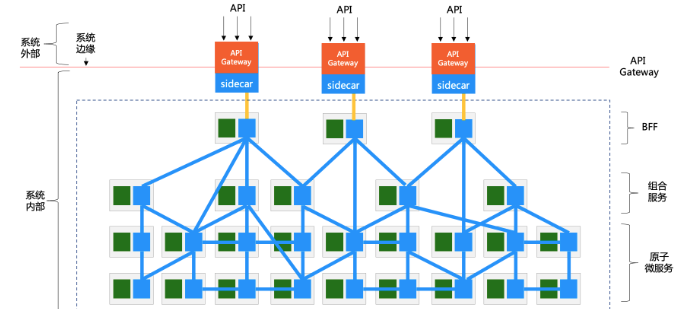
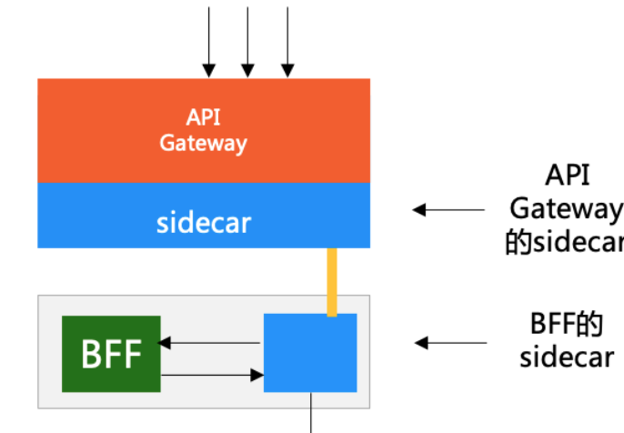
注意到，流量从被 API Gateway 接收，到进入 BFF 在这个流程中，这个请求路径中有两个 Sidecar：
- 和 BFF 部署在一起的，是没有 API Gateway 功能的普通 Sidecar；
- API Gateway 和 Sidecar 融合之后，这就是一个“有 API Gateway 功能的大 Sidecar”（或者是“有 Sidecar 功能的特殊 API Gateway”）：虽然扮演了 API Gateway 的角色，但本质上依然包含一个完整功能的 Sidecar，和 BFF 自带的 Sidecar 是等同的；
我们尝试将两个 Sidecar 合二为一，去掉 BFF 自带的 Sidecar，直接把扮演 API Gateway 的 Sidecar 给 BFF 用：
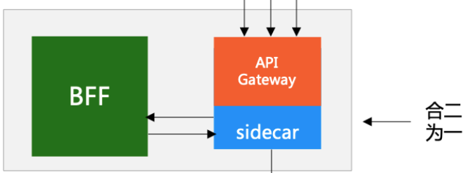
此时的场景是这样：
- 流量直接打到 BFF 上（BFF 前面可能会挂其他的网络组件提供负载均衡等功能）；
- BFF 的 Sidecar 接收流量，完成 API Gateway 的功能，然后将流量转给 BFF；
- BFF 通过 Sidecar 调用内部服务（和没有合并时一致）；
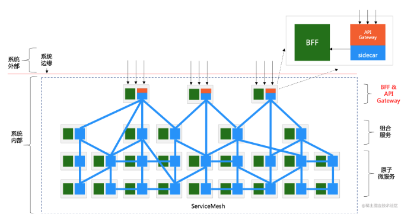
“BFF 完全收口外部流量”。这是前提条件，因为原有的 API Gateway 集群已经不再存在，如果 BFF 没能收口全部流量，则这些未能收口的流量会找不到 API Gateway。当然，如果愿意稍微麻烦一点，在部署时清晰的划定需要暴露给外界的服务，直接在这些服务上部署带 API Gateway 功能的 Sidecar，也是可行的，只是管理上会比 BFF 模式要复杂一些。
API Gateway“消失”了 —— 不再有一个明确物理部署的 API Gateway 的集群，常规的中心化的网关在这个方案中被融合到每一个 BFF 的实例中，从而实现另外一个重要特性：去中心化。
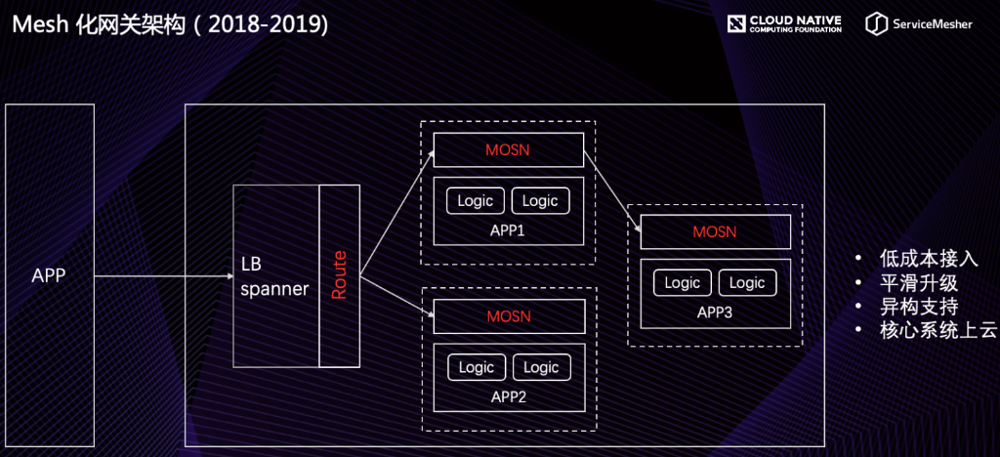
MOSN 是 MOSN 是 Modular Open Smart Network 的简称， 是一款使用 Go 语言开发的网络代理软件，由蚂蚁金服开源并经过几十万容器的生产级验证。 MOSN 作为云原生的网络数据平面，旨在为服务提供多协议、模块化、智能化、安全的代理能力。 MOSN 可以与任何支持 xDS API 的 Service Mesh 集成，亦可以作为独立的四、七层负载均衡，API Gateway、云原生 Ingress 等使用